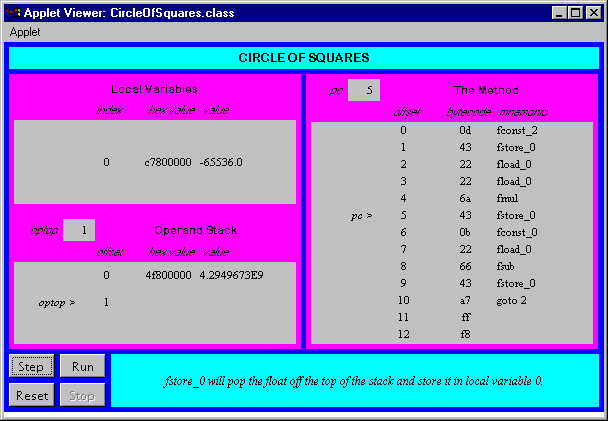

Any use of this Beta Book is subject to the rules stated in the Terms of Use.
| © 1997 The McGraw-Hill Companies, Inc. All rights reserved. Any use of this Beta Book is subject to the rules stated in the Terms of Use. | |
This chapter describes the floating point numbers and the instructions that perform floating point arithmetic inside the Java Virtual Machine. The floating point numbers described here conform to the IEEE 754 floating point standard, which is the standard to which all Java Virtual Machine implementations must adhere.
Accompanying this chapter on the CD-ROM are two applets that interactively illustrate the material presented in the chapter. One applet, named Inner Float, allows you to view and manipulate the individual components that make up a floating point number. The other applet, named Circle of Squares, simulates the Java Virtual Machine executing a method that uses several of the floating point opcodes. Within this chapter, you will find descriptions of both of these applets.
Floating Point Numbers
The Java Virtual Machine's floating-point support adheres to the IEEE-754 1985 floating-point standard. This standard defines the format of 32-bit and 64-bit floating-point numbers and defines the operations upon those numbers. In the Java Virtual Machine, floating-point arithmetic is performed on 32-bit floats and 64-bit doubles. For each opcode that performs arithmetic on floats, there is a corresponding opcode that performs the same operation on doubles.
A floating-point number has four parts--a sign, a mantissa, a radix, and an exponent. The sign is either a 1 or -1. The mantissa, always a positive number, holds the significant digits of the floating-point number. The exponent indicates the positive or negative power of the radix that the mantissa and sign should be multiplied by. The four components are combined as follows to get the floating-point value:
begin math formula
sign * mantissa * radix exponent
end math forzmula
Floating-point numbers have multiple representations, because one can always multiply the mantissa of any floating-point number by some power of the radix and change the exponent to get the original number. For example, as shown in Table 14-1, the number -5 can be represented equally by any of the following forms in radix 10.
Table 14-1. Forms of -5
| Sign | Mantissa | Radix exponent |
| -1 | 50 | 10 -1 |
| -1 | 5 | 10 0 |
| -1 | 0.5 | 10 1 |
| -1 | 0.05 | 10 2 |
For each floating-point number there is one representation that is said to be normalized. A floating-point number is normalized if its mantissa is within the range defined by the following relation:
begin math formula
1/radix <= mantissa < 1
end math formula
A normalized radix 10 floating-point number has its decimal point just to the left of the first non-zero digit in the mantissa. The normalized floating-point representation of -5 is -1 * 0.5 * 10 1. In other words, a normalized floating-point number's mantissa has no non-zero digits to the left of the decimal point and a non-zero digit just to the right of the decimal point. Any floating-point number that doesn't fit into this category is said to be denormalized. Note that the number zero has no normalized representation, because it has no non-zero digit to put just to the right of the decimal point. "Why be normalized?" is a common exclamation among zeros.
Floating-point numbers in the Java Virtual Machine use a radix of two, so they have the following form:
begin math formula
sign * mantissa * 2 exponent
end math formula
The mantissa of a floating-point number in the Java Virtual Machine is expressed as a binary number. A normalized mantissa has its binary point (the base-two equivalent of a decimal point) just to the left of the most significant non-zero digit. Because the binary number system has just two digits--zero and one--the most significant digit of a normalized mantissa is always a one.
The most significant bit of a float or double is its sign bit. The mantissa occupies the 23 least significant bits of a float and the 52 least significant bits of a double. The exponent, 8 bits in a float and 11 bits in a double, sits between the sign and mantissa. The format of a float is shown below. The sign bit is shown as an "s," the exponent bits are shown as "e," and the mantissa bits are shown as "m":
begin math formula
s eeeeeeee mmmmmmmmmmmmmmmmmmmmmmm
end math formula
A sign bit of zero indicates a positive number and a sign bit of one indicates a negative number. The mantissa is always interpreted as a positive base-two number. It is not a twos-complement number. If the sign bit is one, the floating-point value is negative, but the mantissa is still interpreted as a positive number that must be multiplied by -1.
The exponent field is interpreted in one of three ways. An exponent of all ones indicates the floating-point number has one of the special values of plus or minus infinity, or "not a number" (NaN). NaN is the result of certain operations, such as the division of zero by zero. An exponent of all zeros indicates a denormalized floating-point number. Any other exponent indicates a normalized floating-point number.
The mantissa contains one extra bit of precision beyond those that appear in the mantissa bits. The mantissa of a float, which occupies only 23 bits, has 24 bits of precision. The mantissa of a double, which occupies 52 bits, has 53 bits of precision. The most significant mantissa bit is predictable, and is therefore not included, because the exponent of floating-point numbers in the Java Virtual Machine indicates whether or not the number is normalized. If the exponent is all zeros, the floating-point number is denormalized and the most significant bit of the mantissa is known to be a zero. Otherwise, the floating-point number is normalized and the most significant bit of the mantissa is known to be one.
The Java Virtual Machine throws no exceptions as a result of any floating-point operations. Special values, such as positive and negative infinity or NaN, are returned as the result of suspicious operations such as division by zero. An exponent of all ones indicates a special floating-point value. An exponent of all ones with a mantissa whose bits are all zero indicates an infinity. The sign of the infinity is indicated by the sign bit. An exponent of all ones with any other mantissa is interpreted to mean "not a number" (NaN). The Java Virtual Machine always produces the same mantissa for NaN, which is all zeros except for the most significant mantissa bit that appears in the number. These values are shown for a float in Table 14-2.
Table 14-2. Special float values
| Value | float bits (sign exponent mantissa) |
| +Infinity | 0 11111111 00000000000000000000000 |
| -Infinity | 1 11111111 00000000000000000000000 |
| NaN | 1 11111111 10000000000000000000000 |
Exponents that are neither all ones nor all zeros indicate the power of two by which to multiply the normalized mantissa. The power of two can be determined by interpreting the exponent bits as a positive number, and then subtracting a bias from the positive number. For a float, the bias is 126. For a double, the bias is 1023. For example, an exponent field in a float of 00000001 yields a power of two by subtracting the bias (126) from the exponent field interpreted as a positive integer (1). The power of two, therefore, is (1 - 126), which is -125. This is the smallest possible power of two for a float. At the other extreme, an exponent field of 11111110 yields a power of two of (254 - 126) or 128. The number 128 is the largest power of two available to a float. Several examples of normalized floats are shown in Table 14-3.
Table 14-3. Normalized float values
| Value | float bits (sign exponent mantissa) | Unbiased exponent |
| Largest positive (finite) float | 0 11111110 11111111111111111111111 | 128 |
| Largest negative (finite) float | 1 11111110 11111111111111111111111 | 128 |
| Smallest normalized float | 1 00000001 00000000000000000000000 | -125 |
| Pi | 0 10000000 10010010000111111011011 | 2 |
An exponent of all zeros indicates the mantissa is denormalized, which means the unstated leading bit is a zero instead of a one. The power of two in this case is the same as the lowest power of two available to a normalized mantissa. For the float, this is -125. This means that normalized mantissas multiplied by two raised to the power of -125 have an exponent field of 00000001, while denormalized mantissas multiplied by two raised to the power of -125 have an exponent field of 00000000.
The allowance for denormalized numbers at the bottom end of the range of exponents supports gradual underflow. If the lowest exponent was instead used to represent a normalized number, underflow to zero would occur for larger numbers. In other words, leaving the lowest exponent for denormalized numbers allows smaller numbers to be represented. The smaller denormalized numbers have fewer bits of precision than normalized numbers, but this is preferable to underflowing to zero as soon as the exponent reaches its minimum normalized value. Table 14-4 shows several denormalized floating-point values.
Table 14-4. Denormalized float values
| Value | float bits (sign exponent mantissa) |
| Smallest positive (non-zero) float | 0 00000000 00000000000000000000001 |
| Smallest negative (non-zero) float | 1 00000000 00000000000000000000001 |
| Largest denormalized float | 1 00000000 11111111111111111111111 |
| Positive zero | 0 00000000 00000000000000000000000 |
| Negative zero | 1 00000000 00000000000000000000000 |
Inner Float: A Java float Reveals its Inner Nature
The applet shown in Figure 14-1 lets you play around with the floating-point format. The value of a float is displayed in several formats. The radix two scientific notation format shows the mantissa and exponent in base ten. Before being displayed, the actual mantissa is multiplied by 2 24, which yields an integral number, and the unbiased exponent is decremented by 24. Both the integral mantissa and exponent are then easily converted to base ten and displayed. The applet is embedded in a web page on the CD-ROM in file applets/InnerFloat.html. The text of the web page includes several button-press sequences that demonstrate various properties of floating point numbers.

The Floating Point Opcodes
Table 14-5 shows the opcodes that pop two floating-point values from the top of the stack, add them, and push the result. The type of the values is indicated by the opcode itself, and the result always has the same type as the numbers being added. No exceptions are thrown by these opcodes. Overflow results in a positive or negative infinity, and underflow results in a positive or negative zero.
Table 14-5. Floating-point addition
| Opcode | Operand(s) | Description |
| fadd | (none) | pops two floats, adds them, and pushes the float result |
| dadd | (none) | pops two doubles, adds them, and pushes the double result |
Subtraction is performed on floats and doubles via the opcodes shown in Table 14-6. Each opcode causes the top two values of the appropriate type to be popped off the stack. The topmost value is subtracted from the value just beneath the topmost value. The result is pushed back onto the stack. No exceptions are thrown by either of these opcodes.
Table 14-6. Floating-point subtraction
| Opcode | Operand(s) | Description |
| fsub | (none) | pops two floats, subtracts them, and pushes the float result |
| dsub | (none) | pops two doubles, subtracts them, and pushes the double result |
Multiplication of floats and doubles is accomplished via the opcodes shown in Table 14-7. Each opcode causes two values of the same type to be popped off the stack and multiplied. The result, of the same type as the numbers being multiplied, is pushed back onto the stack. No exceptions are thrown.
Table 14-7. Floating-point multiplication
| Opcode | Operand(s) | Description |
| fmul | (none) | pops two floats, multiplies them, and pushes the float result |
| dmul | (none) | pops two doubles, multiplies them, and pushes the double result |
The division is performed on floats and doubles by the opcodes shown in Table 14-8. The division opcodes cause the top two values of the appropriate type to be popped off the stack. The value immediately beneath the topmost value is divided by the topmost value. (In other words, the value pushed first is the dividend or numerator. The value pushed second--the top of the stack--is the divisor or denominator.) The result of the division is pushed back onto the stack.
Table 14-8. Floating-point division
| Opcode | Operand(s) | Description |
| fdiv | (none) | pops two floats, divides them, and pushes the float result |
| ddiv | (none) | pops two doubles, divides them, and pushes the double result |
No exception is thrown as a result of any floating-point division. Floating-point division of a finite value by zero yields a positive or negative infinity. Floating-point division of zero by zero yields NaN. A summary of the result of dividing various combinations of infinity, zero, NaN, and finite values is given in Table 14-10.
The remainder operation is performed on floats and doubles via the opcodes shown in Table 14-9. The following opcodes cause the top two values to be popped from the stack. The value just beneath the topmost value is divided by the topmost value, and the remainder of that division is pushed back onto the stack.
Table 14-9. Floating-point remainder
| Opcode | Operand(s) | Description |
| frem | (none) | pops two floats, divides them, and pushes the float remainder |
| drem | (none) | pops two doubles, divides them, and pushes the double remainder |
No exception is thrown as a result of any floating-point remainder operation. Floating-point remainder of any value divided by zero yields a NaN result. A summary of the result of computing the remainder various combinations of infinity, zero, NaN, and finite values is given in Table 14-10.
Table 14-10. Results of various floating-point divisions
| a | b | a/b | a%b |
| Finite | +-0.0 | +-Infinity | NaN |
| Finite | +-Infinity | +-0.0 | a |
| +-0.0 | +-0.0 | NaN | NaN |
| +-Infinity | Finite | +-Infinity | NaN |
| +-Infinity | +Infinity | NaN | NaN |
The remainder operation provided by frem and drem follows the same rule as the integer remainder operation provided by irem and lrem:
begin
(a/b)*b + a%b == a
end
In the floating point case, the division (a/b) must be converted to an int or long to remove the fraction, as in:
begin
((long)(a/b))*b + a%b == a
end
This remainder does not follow to the IEEE 754 standard. To obtain a floating point remainder as defined by IEEE 754, use the IEEEremainder() method of java.lang.Math.
The opcodes shown in Table 14-11 perform arithmetic negation on floats and doubles. Negation opcodes pop the top value from the stack, negates it, and pushes the result.
Table 14-11. Floating-point negation
| Opcode | Operand(s) | Description |
| fneg | (none) | pops a float, negates it, and pushes the result |
| dneg | (none) | pops a double, negates it, and pushes the result |
Circle of Squares: A Simulation
The Circle of Squares applet, shown in Figure 14-2, demonstrates a Java Virtual Machine executing a sequence of bytecodes that perform floating-point arithmetic. This applet is part of a web page on the CD-ROM in file applets/CircleOfSquares.html. The bytecode sequence in the simulation was generated by javac for the squareItForever() method of the class shown below:
begin
// On CD-ROM in file opcodes/ex1/SquareCircle.javaclass SquareCircle {
static void squareItForever() {
float f = 2;
for (;;) {
f *= f;
f = 0 - f;
}
}
}
end
The bytecodes generated by javac for squareItForever() are shown below:
begin
0 fconst_2 // Push float constant 2.1 fstore_0 // Pop to local variable 0 (float f): float f = 2;
2 fload_0 // Push local variable 0 (float f).
3 fload_0 // Push local variable 0 (float f).
4 fmul // Pop top two floats, multiply, push float result.
5 fstore_0 // Pop to local variable 0 (float f): f *= f;
6 fconst_0 // Push float constant 0.
7 fload_0 // Push local variable 0 (float f).
8 fsub // Subtract top float from next to top float:
// imByte = (byte) imInt;
9 fstore_0 // Pop result to local variable 0 (float f): f = 0 - f;
10 goto 2 // Jump back to the first fload_0 instruction:
// for (;;) {}
end
The squareItForever() method repeatedly squares a float value until it hits infinity. Each time the float is squared it is also negated. The float starts out as 2. It only takes seven iterations before infinity is reached, which isn't nearly as long as it takes in real life. The hex representation of the bits that make up the float are shown in the "hex value" column in the applet. The "value" column shows the number as humans are used to seeing it. This human-friendly value is generated by the Float.toString() method.
To drive the Circle of Squares simulation, use the Step, Reset, Run, and Stop buttons. Each time you press the Step button, the simulator will execute the instruction pointed to by the pc register. If you press the Run button, the simulation will continue with no further coaxing on your part until you press the Stop button. To start the simulation over, press the Reset button. For each step of the simulation, a panel at the bottom of the applet contains an explanation of what the next instruction will do. Happy clicking.

On the CD-ROM
The CD-ROM contains the source code examples from this chapter in the opcodes directory.
The Inner Float applet is embedded in a web page on the CD-ROM in file applets/InnerFloat.html. The text of the web page includes several button-press sequences that demonstrate various properties of floating point numbers. The source code for this applet is found alongside its class files in the applets/InnerFloat directory.
The Circle of Squares applet is in a web page on the CD-ROM in file applets/CircleOfSquares.html. The source code for this applet is found alongside its class files, in the applets/JVMSimulators and applets/JVMSimulators/COM/artima/jvmsim directories.
The Resources Page
For more information about the material presented in this chapter, visit the resources page: http://www.artima.com/insidejvm/float.html.
COMPUTING MCGRAW-HILL | Beta Books | Contact Us | Order Information | Online Catalog
Computing McGraw-Hill is an imprint of the McGraw-Hill Professional Book Group.